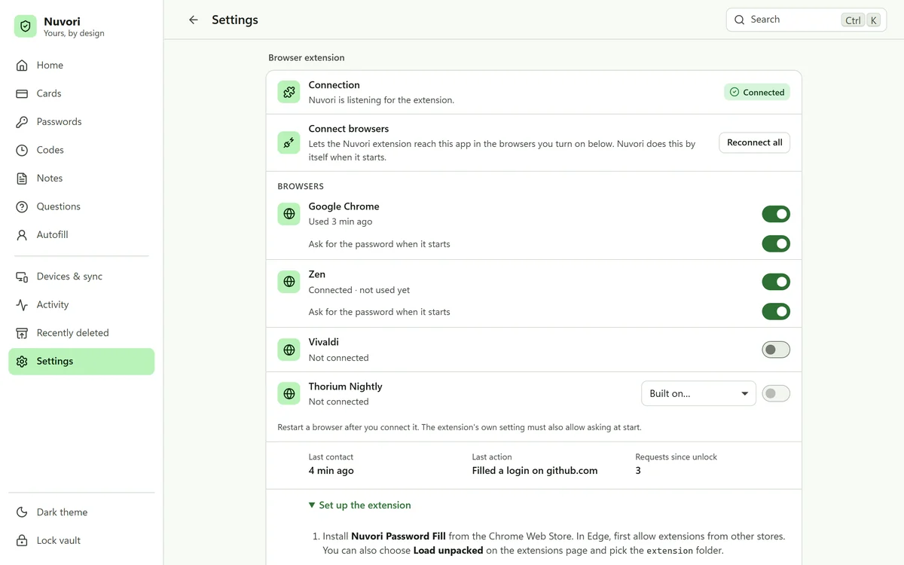

- Nuvori
- Browsers
A password manager for Zen, Helium, Arc, Comet and more
Nuvori keeps your logins, cards and codes outside the browser, in Nuvori for Windows. Add the free Nuvori Password Fill extension to each browser you use, and the same vault fills in all of them. Change browsers whenever you like. There is nothing to export or import again.
- Free
- Windows 10 and 11
- Chromium 127+ and Firefox 140+
- No account
Why keep passwords outside the browser?
A browser's own password manager keeps your passwords in that browser, or in that browser maker's account. To try another browser, you export a file, import it, and delete the file again. Cards and passkeys may not come along.
Nuvori works the other way round. Your vault lives in Nuvori for Windows on your PC, and in Nuvori for Android on your phone. The extension has no vault of its own. It asks Nuvori only for the login you pick. A new browser needs only the extension, and your master password never reaches any browser.
Set up Nuvori in any browser
- Install Nuvori for Windows, create your vault and unlock it.
- Add Nuvori Password Fill to the browser: from the Chrome Web Store for a browser built on Chromium, or from Firefox Add-ons for a browser built on Firefox.
- Nuvori finds the browser and connects it. Restart the browser once.
- Open a sign-in page on an HTTPS site. Pick your login in the Nuvori list under the field, or click the Nuvori button in the toolbar.
To check or change a browser's connection, open Settings > Browser extension in Nuvori for Windows. Each browser on the PC has its own switch.

Browsers Nuvori recognizes by name
Nuvori for Windows recognizes these browsers and connects them by itself.
Built on Chromium
Version 127 or newer. Get the extension from the Chrome Web Store.
- Helium
- Comet
- Arc
- Brave
- Vivaldi
- Opera
- Thorium
- Chromium
- Chrome
- Edge
Built on Firefox
Version 140 or newer. Get the add-on from Firefox Add-ons. The listing is under review.
- Zen
- Firefox
- LibreWolf
- Waterfox
- Floorp
- Mullvad Browser
- Tor Browser
Good to know
- Zen and other browsers built on Firefox: the list on the page offers the site's logins and codes. Cards and addresses fill from the Nuvori button in the toolbar.
- Helium has no built-in password manager, by design. Nuvori fills that gap.
- Edge: allow extensions from other stores first, then add the extension from the Chrome Web Store.
- Comet and Arc are built on Chromium. They use the extension from the Chrome Web Store, like Chrome.
A browser that isn't on the list
A newer browser built on Chromium or Firefox can still work:
- Install the extension from the matching store.
- In Nuvori for Windows, open Settings > Browser extension.
- Next to the browser, choose Built on: Chromium or Built on: Firefox. Then turn on its switch.
- Restart the browser.
This works for most browsers built on Chromium or Firefox. A browser that reads its own, different connection key can't be connected this way.
Only one “Save password?”
Two password managers asking at once is noisy. In the extension's Settings, turn on Use Nuvori instead of the browser's password manager. It turns off the browser's own “Save password?” prompts. A second switch also turns off the browser's address and card autofill.
Passwords already saved in the browser still show in its own suggestions. Delete them in the browser after you move them to Nuvori. Turning the switch off, or removing the extension, gives these settings back to the browser.
Bring your passwords along once
Export your passwords from the browser you use now, and import the file in Nuvori for Android. Sync takes them to your PC, and every browser with the extension can fill them. How to import passwords from Chrome, Edge, Brave or Firefox.
What doesn't work
- The extension needs Nuvori for Windows on the same PC.
- Safari doesn't work, and there is no Nuvori for Mac, iPhone, iPad or Linux.
- Nuvori fills only on HTTPS pages.
- The extension doesn't handle passkeys. On Windows 11, the Microsoft Store version of Nuvori offers your passkeys in the Windows passkey prompt instead.
On Android, Nuvori fills through Android's autofill service, not an extension. Autofill and passkeys on Android.